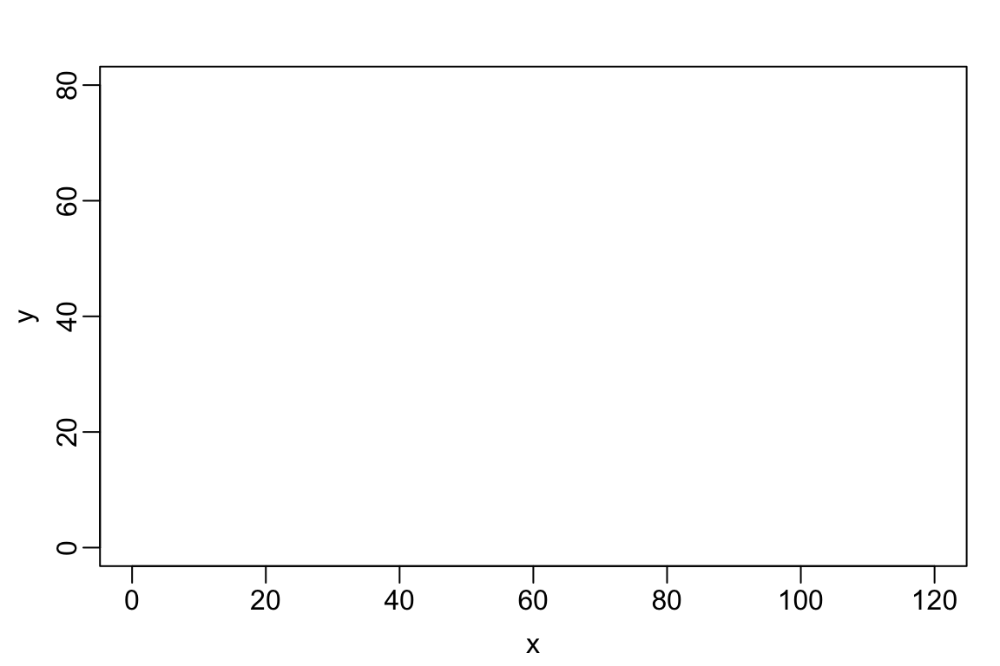
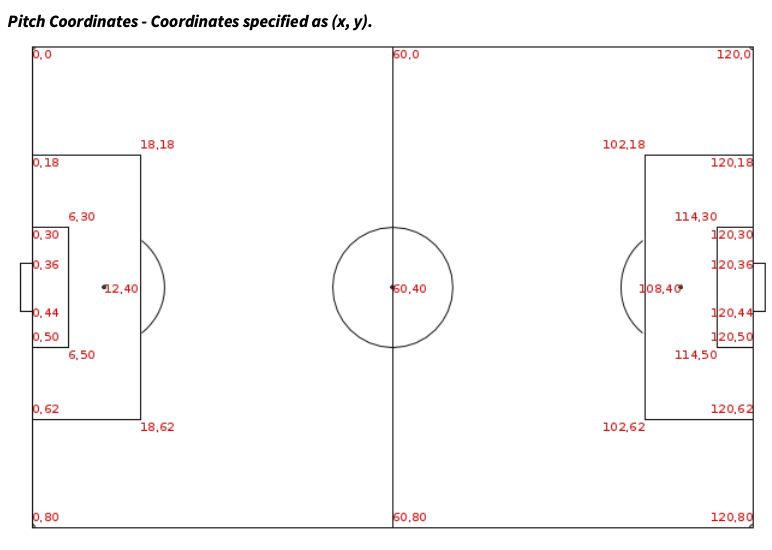
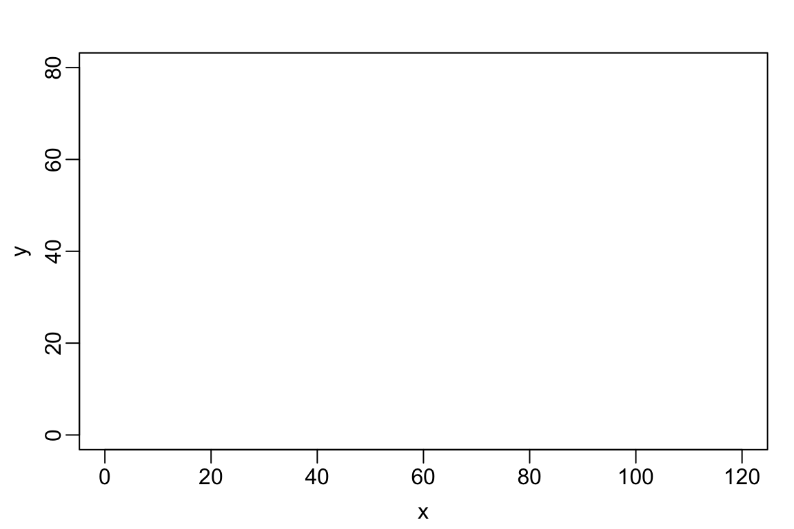
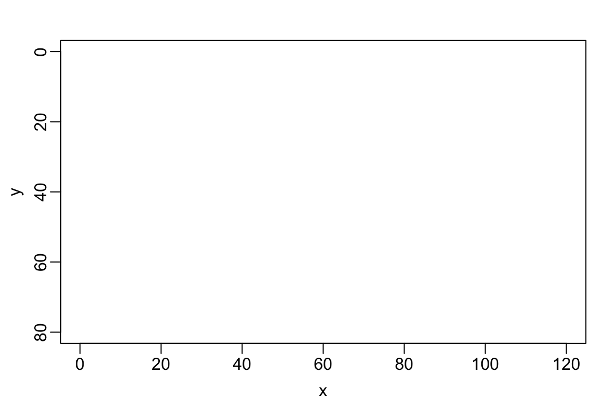
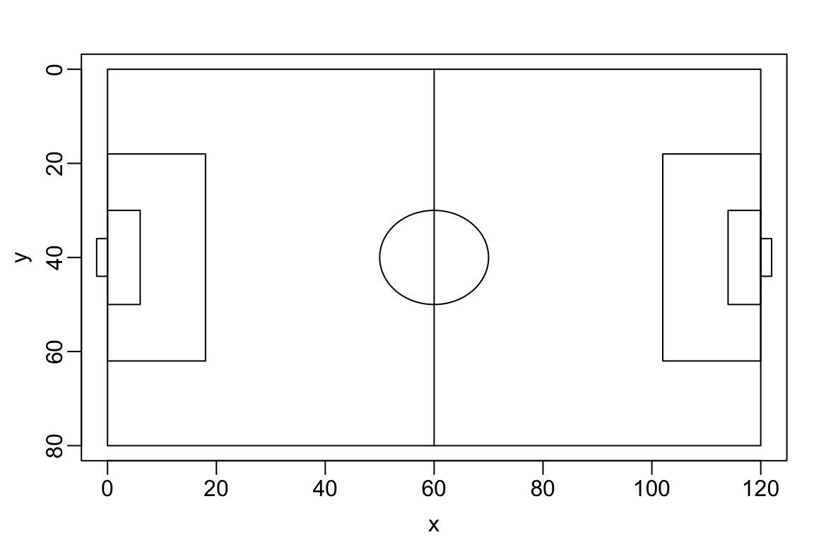
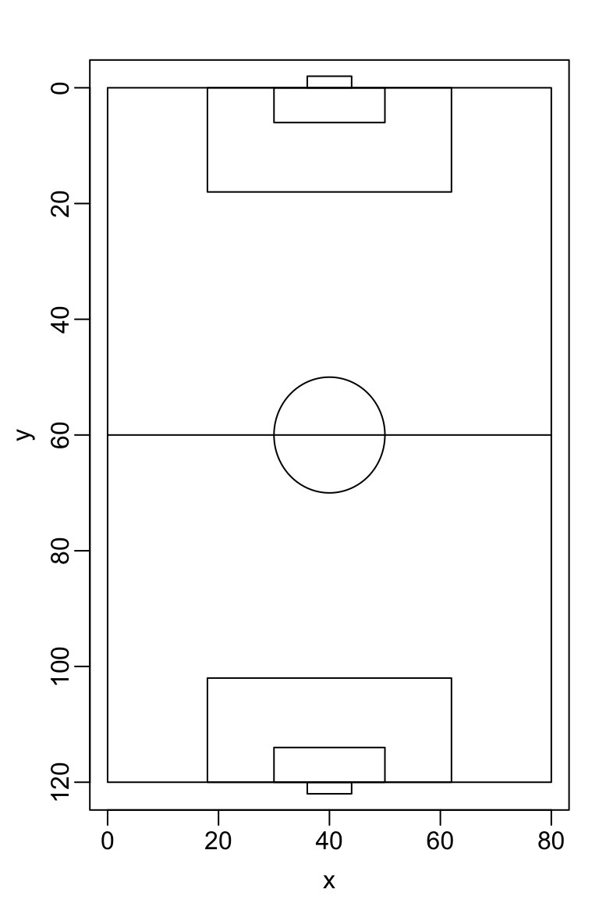
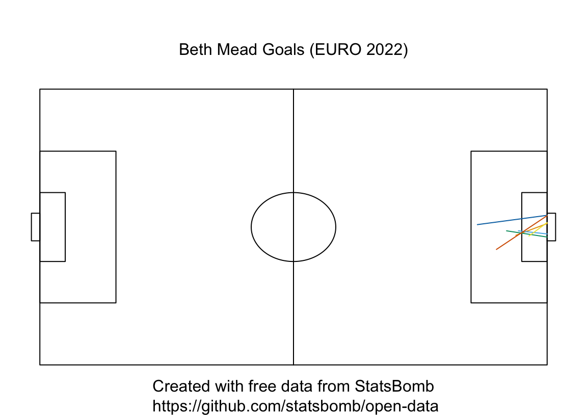
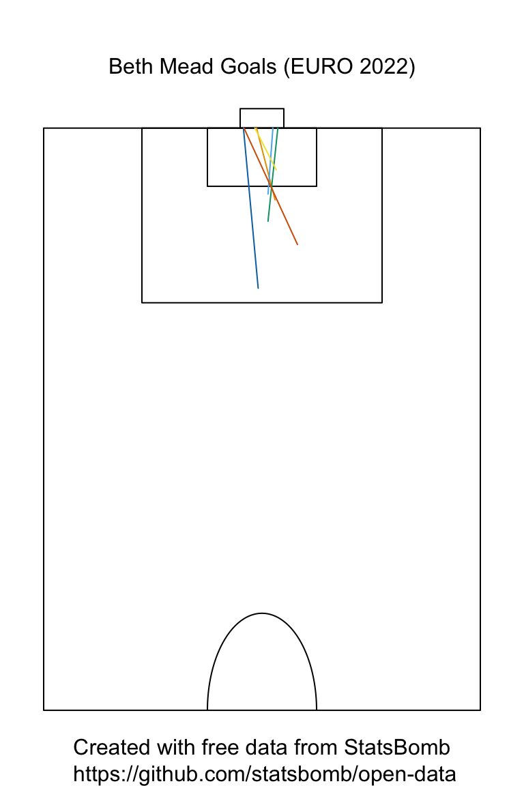

par(mar = c(3,3,2,1), mgp = c(1.8, 0.5, 0)) # sets up margins for plot
plot(1, type = "n", # signals that we want an empty plot
xlab = "x", ylab = "y", # labels axes
xlim = c(0,120), ylim = c(0,80))
In Lectures 2 and 3, we built several expected goals (xg) models using data provided by StatsBomb. StatsBomb pre-processes their raw tracking data so that attacking play is oriented from left to right. I find it somewhat more aesthetically pleasing to visualize shot data vertically with the goal line on top and the half-line at the bottom.
This page defines a function to transform StatsBomb shot location data so that it can be plotted vertically instead of horizontally. As you continue to work with StatsBomb data, feel free to use these functions.
StatsBomb converts their raw location data to a standardized pitch of dimensions 120y x 80y. Appendix 2 of their Open Data Specification document shows the standardized pitch along with several landmarks like the penalty area and goalkeeper’s box.

Notice that the origin (i.e., the point with coordinates c(0,0)) is in the top-left corner so that the \(x\) coordinate increases as you more from left to right and the \(y\) coordinate increases as you move from top to bottom. This coordinate system is standard for 2D computer graphics1 and is often referred to as the “left-handed” coordinate system.
When we build R graphics, we typically use the more conventional “right-handed” coordinate system in which the \(y\) coordinates increases when we move from bottom. For instance, to create a plot region with \(0 \leq x \leq 120\) and \(0 \leq y \leq 80,\) we might use something like the following code
par(mar = c(3,3,2,1), mgp = c(1.8, 0.5, 0)) # sets up margins for plot
plot(1, type = "n", # signals that we want an empty plot
xlab = "x", ylab = "y", # labels axes
xlim = c(0,120), ylim = c(0,80))
Luckily, there is a quick “fix”2 that allows us to generate plots in R using the StatsBomb coordinate system: instead of specifying ylim = c(0,80), we simply specify ylim = c(80,0). This new specification tells R that when we move from bottom-to-top, the \(y\) coordinate should go from 80 to 0.
par(mar = c(3,3,2,1), mgp = c(1.8, 0.5, 0))
plot(1, type = "n",
xlim = c(0, 120), ylim = c(80, 0),
xlab = "x", ylab = "y")
Now that we have the coordinate system sorted, we will hard-code the coordinates several landmarks on the pitch. Doing so will help us determine an appropriate transformation of coordinates to produce a vertically oriented pitch. The main landmarks are the corners of the pitch; the corners of the left and right penalty boxes; the corners of the left and right goalkeepers’ areas; the corners of the left and right nets; the locations of the goal posts; and the half-circle.
# corners of pitch
top_left_corner <- c(0,0)
bot_left_corner <- c(0,80)
top_right_corner <- c(120,0)
bot_right_corner <- c(120, 80)
# endpoints of half-line
top_halfline <- c(60,0)
bot_halfline <- c(60, 80)
# corners of left penalty area
top_left_penl <- c(0, 18)
bot_left_penl <- c(0,62)
top_right_penl <- c(18,18)
bot_right_penl <- c(18,62)
# corners of left goalkeeper area
top_left_gkl <- c(0,30)
bot_left_gkl <- c(0,50)
top_right_gkl <- c(6,30)
bot_right_gkl <- c(6,50)
# left goal posts
top_postl <- c(0,36)
bot_postl <- c(0,44)
# corners of left net
top_left_netl <- c(-2,36)
bot_left_netl <- c(-2, 44)
top_right_netl <- c(0, 36)
bot_right_netl <- c(0,44)
# corners of right penalty area
top_left_penr <- c(102,18)
bot_left_penr <- c(102,62)
top_right_penr <- c(120,18)
bot_right_penr <- c(120,62)
# corners of right goal keeper's area
top_left_gkr <- c(114,30)
bot_left_gkr <- c(114,50)
top_right_gkr <- c(120,30)
bot_right_gkr <- c(120,50)
# right goal posts
top_postl <- c(120,36)
bot_postl <- c(120,44)
# corners of left net
top_left_netr <- c(120,36)
bot_left_netr <- c(120, 44)
top_right_netr <- c(122, 36)
bot_right_netr <- c(122,44)
# half-circles
left_halfcirc <-
data.frame(x = 60 + 10*cos(seq(from = pi/2, to = 3*pi/2, length = 100)),
y = 40 - 10 * sin(seq(from = pi/2, to = 3*pi/2, length = 100)))
right_halfcirc <-
data.frame(x = 60 + 10*cos(seq(from =-pi/2, to = pi/2, length = 100)),
y = 40 - 10 * sin(seq(from = -pi/2, to = pi/2, length = 100)))We can now add in the penalty and goalkeepers’ areas to the pitch using the rect function. This function draws a rectangle whose bottom left coordinate is c(xleft, ybottom) and whose top right coordinate is c(xright, ytop). We also add in the half line and circle
par(mar = c(3,3,2,1),
mgp = c(1.8, 0.5, 0),
xpd = TRUE) # xpd allows plotting in margins
plot(1, type = "n",
xlab = "x", ylab = "y",
xlim = c(0,120), ylim = c(80,0))
# boundaries of pitch
rect(xleft = bot_left_corner[1], ybottom = bot_left_corner[2],
xright = top_right_corner[1], ytop = top_right_corner[2])
# left penalty area
rect(xleft = bot_left_penl[1], ybottom = bot_left_penl[2],
xright = top_right_penl[1], ytop = top_right_penl[2])
# left goalkeeper's area
rect(xleft = bot_left_gkl[1], ybottom = bot_left_gkl[2],
xright = top_right_gkl[1], ytop = top_right_gkl[2])
# left net
rect(xleft = bot_left_netl[1], ybottom = bot_left_netl[2],
xright = top_right_netl[1], ytop = top_right_netl[2])
# right penalty area
rect(xleft = bot_left_penr[1], ybottom = bot_left_penr[2],
xright = top_right_penr[1], ytop = top_right_penr[2])
# right goalkeeper's area
rect(xleft = bot_left_gkr[1], ybottom = bot_left_gkr[2],
xright = top_right_gkr[1], ytop = top_right_gkr[2])
# right net
rect(xleft = bot_left_netr[1], ybottom = bot_left_netr[2],
xright = top_right_netr[1], ytop = top_right_netr[2])
# half-line
lines(x = c(top_halfline[1], bot_halfline[1]),
y = c(top_halfline[2], bot_halfline[2]))
# left half-circle
lines(x = left_halfcirc$x, y = left_halfcirc$y)
# right half-circle
lines(x = right_halfcirc$x, y = right_halfcirc$y)
We will form a vertical pitch layout by composing the following three transformations:
Putting these steps together, we have the transformation \[ (x,y) \rightarrow (x-60, y-40) \rightarrow (y-40, 60-x) \rightarrow (y,120-x) \] It will be useful to define functions for these transformations
Recall that the function rect draws a rectangle using the coordinates of its bottom left and top right corners. We can compute the coordinates of the bottom left (resp. top right) corner of a rectangle in a vertical orientation by transforming the coordinates of the top left (resp. bottom right) corners of a rectangle in the original horizontal orientation.
par(mar = c(3,3,2,1), mgp = c(1.8, 0.5, 0))
plot(1, type = "n",
xlim = c(0, 80), ylim = c(120,0), # note the different limits!
xlab = "x", ylab = "y")
# boundaries of pitch
rect(xleft = transform_x(top_left_corner[1], top_left_corner[2]),
ybottom = transform_y(top_left_corner[1], top_left_corner[2]),
xright = transform_x(bot_right_corner[1], bot_right_corner[2]),
ytop = transform_y(bot_right_corner[1], bot_right_corner[2]))
# original left penalty area now on bottom
rect(xleft = transform_x(top_left_penl[1], top_left_penl[2]),
ybottom = transform_y(top_left_penl[1], top_left_penl[2]),
xright = transform_x(bot_right_penl[1], bot_right_penl[2]),
ytop = transform_y(bot_right_penl[1], bot_right_penl[2]))
# original left goalkeeper's area now on bottom
rect(xleft = transform_x(top_left_gkl[1], top_left_gkl[2]),
ybottom = transform_y(top_left_gkl[1], top_left_gkl[2]),
xright = transform_x(bot_right_gkl[1], bot_right_gkl[2]),
ytop = transform_y(bot_right_gkl[1], bot_right_gkl[2]))
# original left net now on bottom
rect(xleft = transform_x(top_left_netl[1], top_left_netl[2]),
ybottom = transform_y(top_left_netl[1], top_left_netl[2]),
xright = transform_x(bot_right_netl[1], bot_right_netl[2]),
ytop = transform_y(bot_right_netl[1], bot_right_netl[2]))
# original right penalty area now on top
rect(xleft = transform_x(top_left_penr[1], top_left_penr[2]),
ybottom = transform_y(top_left_penr[1], top_left_penr[2]),
xright = transform_x(bot_right_penr[1], bot_right_penr[2]),
ytop = transform_y(bot_right_penr[1], bot_right_penr[2]))
# original right goalkeeper's area now on top
rect(xleft = transform_x(top_left_gkr[1], top_left_gkr[2]),
ybottom = transform_y(top_left_gkr[1], top_left_gkr[2]),
xright = transform_x(bot_right_gkr[1], bot_right_gkr[2]),
ytop = transform_y(bot_right_gkr[1], bot_right_gkr[2]))
# original right net now on bottom
rect(xleft = transform_x(top_left_netr[1], top_left_netr[2]),
ybottom = transform_y(top_left_netr[1], top_left_netr[2]),
xright = transform_x(bot_right_netr[1], bot_right_netr[2]),
ytop = transform_y(bot_right_netr[1], bot_right_netr[2]))
# half-line
lines(x = transform_x( c(top_halfline[1], bot_halfline[1]), c(top_halfline[2], bot_halfline[2])),
y = transform_y( c(top_halfline[1], bot_halfline[1]), c(top_halfline[2], bot_halfline[2])))
# original left half-circle now on bottom
lines(x = transform_x(left_halfcirc$x, left_halfcirc$y),
y = transform_y(left_halfcirc$x, left_halfcirc$y))
# original right half-circle now on top
lines(x = transform_x(right_halfcirc$x, right_halfcirc$y),
y = transform_y(right_halfcirc$x, right_halfcirc$y))
For convenience, we can write a function that plots either the full pitch or the attacking in either the horizontal or vertical orientation. The function plot_pitch has two arguments:
half: Set half = TRUE to plot the attacking half and half = FALSE to plot the full pitch. Default is TRUEvertical: Set vertical = TRUE to plot in a vertical orientation and vertical = FALSE to plot in a horizontal orientation. Default is TRUEYou can download an R script implementing this function from this link. If you save that script in your course or project repository, you can source it as needed. You can also unfold the next code block to see how the function plot_pitch is implemented.
plot_pitch <- function(half = TRUE, vertical = TRUE){
par(mar = c(2,1,4,1), # lower left & right margins but increase top margin
mgp = c(1.8, 0.5, 0),
xpd = TRUE) # allows plotting in the margin
if(vertical){
# plot vertical pitch
if(half){
# only plot the attacking half
plot(1, type = "n",
xlim = c(0,80), ylim = c(60,0),
xaxt = "n", yaxt = "n", # suppresses axis marks
xlab = NA, ylab = NA, # suppress labels
bty = "n") # suppresses the bounding box
# pitch
rect(xleft = transform_x(top_halfline[1], top_halfline[2]),
ybottom = transform_y(top_halfline[1], top_halfline[2]),
xright = transform_x(bot_right_corner[1], bot_right_corner[2]),
ytop = transform_y(bot_right_corner[1], bot_right_corner[2]))
# original right penalty area now on top
rect(xleft = transform_x(top_left_penr[1], top_left_penr[2]),
ybottom = transform_y(top_left_penr[1], top_left_penr[2]),
xright = transform_x(bot_right_penr[1], bot_right_penr[2]),
ytop = transform_y(bot_right_penr[1], bot_right_penr[2]))
# original right goalkeeper's area now on top
rect(xleft = transform_x(top_left_gkr[1], top_left_gkr[2]),
ybottom = transform_y(top_left_gkr[1], top_left_gkr[2]),
xright = transform_x(bot_right_gkr[1], bot_right_gkr[2]),
ytop = transform_y(bot_right_gkr[1], bot_right_gkr[2]))
# original right net now on top
rect(xleft = transform_x(top_left_netr[1], top_left_netr[2]),
ybottom = transform_y(top_left_netr[1], top_left_netr[2]),
xright = transform_x(bot_right_netr[1], bot_right_netr[2]),
ytop = transform_y(bot_right_netr[1], bot_right_netr[2]))
# half-circle
lines(x = transform_x(right_halfcirc$x, right_halfcirc$y),
y = transform_y(right_halfcirc$x, right_halfcirc$y))
} else{
# plot the full field
plot(1, type = "n",
xlim = c(0, 80), ylim = c(120,0),
xaxt = "n", yaxt = "n", # suppresses axis marks
xlab = NA, ylab = NA, # suppress labels
bty = "n") # suppresses the bounding box
# boundaries of pitch
rect(xleft = transform_x(top_left_corner[1], top_left_corner[2]),
ybottom = transform_y(top_left_corner[1], top_left_corner[2]),
xright = transform_x(bot_right_corner[1], bot_right_corner[2]),
ytop = transform_y(bot_right_corner[1], bot_right_corner[2]))
# original left penalty area now on bottom
rect(xleft = transform_x(top_left_penl[1], top_left_penl[2]),
ybottom = transform_y(top_left_penl[1], top_left_penl[2]),
xright = transform_x(bot_right_penl[1], bot_right_penl[2]),
ytop = transform_y(bot_right_penl[1], bot_right_penl[2]))
# original left goalkeeper's area now on bottom
rect(xleft = transform_x(top_left_gkl[1], top_left_gkl[2]),
ybottom = transform_y(top_left_gkl[1], top_left_gkl[2]),
xright = transform_x(bot_right_gkl[1], bot_right_gkl[2]),
ytop = transform_y(bot_right_gkl[1], bot_right_gkl[2]))
# original left net now on bottom
rect(xleft = transform_x(top_left_netl[1], top_left_netl[2]),
ybottom = transform_y(top_left_netl[1], top_left_netl[2]),
xright = transform_x(bot_right_netl[1], bot_right_netl[2]),
ytop = transform_y(bot_right_netl[1], bot_right_netl[2]))
# original right penalty area now on top
rect(xleft = transform_x(top_left_penr[1], top_left_penr[2]),
ybottom = transform_y(top_left_penr[1], top_left_penr[2]),
xright = transform_x(bot_right_penr[1], bot_right_penr[2]),
ytop = transform_y(bot_right_penr[1], bot_right_penr[2]))
# original right goalkeeper's area now on top
rect(xleft = transform_x(top_left_gkr[1], top_left_gkr[2]),
ybottom = transform_y(top_left_gkr[1], top_left_gkr[2]),
xright = transform_x(bot_right_gkr[1], bot_right_gkr[2]),
ytop = transform_y(bot_right_gkr[1], bot_right_gkr[2]))
# original right net now on bottom
rect(xleft = transform_x(top_left_netr[1], top_left_netr[2]),
ybottom = transform_y(top_left_netr[1], top_left_netr[2]),
xright = transform_x(bot_right_netr[1], bot_right_netr[2]),
ytop = transform_y(bot_right_netr[1], bot_right_netr[2]))
# half-line
lines(x = transform_x( c(top_halfline[1], bot_halfline[1]), c(top_halfline[2],bot_halfline[2])),
y = transform_y( c(top_halfline[1], bot_halfline[1]), c(top_halfline[2], bot_halfline[2])))
# original left half-circle now on bottom
lines(x = transform_x(left_halfcirc$x, left_halfcirc$y),
y = transform_y(left_halfcirc$x, left_halfcirc$y))
# original right half-circle now on top
lines(x = transform_x(right_halfcirc$x, right_halfcirc$y),
y = transform_y(right_halfcirc$x, right_halfcirc$y))
}# closes if/else checking whether to plot attacking half
} else{
# plot horizontal pitch
if(half){
plot(1, type = "n",
xlim = c(60,120), ylim = c(80, 0),
xaxt = "n", yaxt = "n", # suppresses axis marks
xlab = NA, ylab = NA,# suppresses labels
bty = "n") # suppresses the bounding box
# boundaries of attacking half
rect(xleft = bot_halfline[1], ybottom = bot_halfline[2],
xright = top_right_corner[1], ytop = top_right_corner[2])
# right penalty area
rect(xleft = bot_left_penr[1], ybottom = bot_left_penr[2],
xright = top_right_penr[1], ytop = top_right_penr[2])
# right goalkeeper's area
rect(xleft = bot_left_gkr[1], ybottom = bot_left_gkr[2],
xright = top_right_gkr[1], ytop = top_right_gkr[2])
# right net
rect(xleft = bot_left_netr[1], ybottom = bot_left_netr[2],
xright = top_right_netr[1], ytop = top_right_netr[2])
# right half-circle
lines(x = right_halfcirc$x, y = right_halfcirc$y)
} else{
plot(1, type = "n",
xlim = c(0,120), ylim = c(80,0),
xaxt = "n", yaxt = "n", # suppresses axis marks
xlab = NA, ylab = NA, # suppress labels
bty = "n") # suppresses the bounding box
# boundaries of pitch
rect(xleft = bot_left_corner[1], ybottom = bot_left_corner[2],
xright = top_right_corner[1], ytop = top_right_corner[2])
# left penalty area
rect(xleft = bot_left_penl[1], ybottom = bot_left_penl[2],
xright = top_right_penl[1], ytop = top_right_penl[2])
# left goalkeeper's area
rect(xleft = bot_left_gkl[1], ybottom = bot_left_gkl[2],
xright = top_right_gkl[1], ytop = top_right_gkl[2])
# left net
rect(xleft = bot_left_netl[1], ybottom = bot_left_netl[2],
xright = top_right_netl[1], ytop = top_right_netl[2])
# right penalty area
rect(xleft = bot_left_penr[1], ybottom = bot_left_penr[2],
xright = top_right_penr[1], ytop = top_right_penr[2])
# right goalkeeper's area
rect(xleft = bot_left_gkr[1], ybottom = bot_left_gkr[2],
xright = top_right_gkr[1], ytop = top_right_gkr[2])
# right net
rect(xleft = bot_left_netr[1], ybottom = bot_left_netr[2],
xright = top_right_netr[1], ytop = top_right_netr[2])
# half-line
lines(x = c(top_halfline[1], bot_halfline[1]),
y = c(top_halfline[2], bot_halfline[2]))
# left half-circle
lines(x = left_halfcirc$x, y = left_halfcirc$y)
# right half-circle
lines(x = right_halfcirc$x, y = right_halfcirc$y)
}
} # closes if/else checking whether to plot horizontally or vertically
}We’ll use our new function plot_pitch() to illustrate all 5 of Beth Mead’s goals at EURO 2022.
The code in the next block, which is very similar to that used in Lecture 2, does the following things:
competition_id = 53 and season_id = 106)We will first plot the goals on the full horizontal pitch
plot_pitch(half = FALSE, vertical = FALSE)
for(i in 1:nrow(mead_goals)){
lines(x = c(mead_goals$location.x[i], mead_goals$shot.end_location.x[i]),
y = c(mead_goals$location.y[i], mead_goals$shot.end_location.y[i]),
col = oi_colors[i+1])
}
mtext("Beth Mead Goals (EURO 2022)", side = 3, line = 1)
mtext("Created with free data from StatsBomb\n https://github.com/statsbomb/open-data",
side = 1, line = 1)
And here are the same goals but in the attacking half in a vertical orientation
plot_pitch(half = TRUE, vertical = TRUE)
for(i in 1:nrow(mead_goals)){
lines(x = c(mead_goals$vert_location.x[i], mead_goals$vert_shot.end_location.x[i]),
y = c(mead_goals$vert_location.y[i], mead_goals$vert_shot.end_location.y[i]),
col = oi_colors[i+1])
}
mtext("Beth Mead Goals (EURO 2022)", side = 3, line = 1)
mtext("Created with free data from StatsBomb\n https://github.com/statsbomb/open-data",
side = 1, line = 1)
See here for the gory details or check out the Wikipedia entry on 2D graphics.↩︎
I found this solution here after Googling “R change origin top left”.↩︎
Counter-clockwise rotations in the usual right-handed coordinate system (with \(y\) increasing from bottom-to-top) are clockwise rotations in the left-handed coordinate system we are using, in which \(y\) increases from top-to-bottom. We want to rotate 90 degrees counter-clockwise in the right-handed system, which is equivalent to a 270 degree clockwise rotation in the left-handed system. See this Wikipedia entry for more details.↩︎